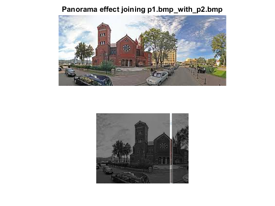

Contents
function Propanotemcorr( )
Variable Initialization
p1 = imread('p1.bmp');
p2 = imread('p2.bmp');
temp = rgb2gray(p1);
temp1 = rgb2gray(p2);
[p1_y,p1_x,p1_z] = size(p1);
[p2_y,p2_x,p2_z] = size(p2);
a = temp1(:,1:3);
Normalized cross-correlation algorithm
for j = 1 : p2_x -3
up1 = double(a(:,:)- mean(a(:)));
up2 = double((temp(:,j:j+2))- mean(temp(:)));
dotUp1Up2 = up1.* up2;
Upper = sum(sum(sum(dotUp1Up2)));
do1 = sum(sum(up1.^2));
do2 = sum(sum(up2.^2));
dotDo1Do2 = do1.*do2;
Down = dotDo1Do2.^0.5;
answer(1,j) = Upper ./ Down;
end
Get starting location
[yy,xx] = find(answer == max(answer(:)));
Panorama effect
a3 = cat(2,p1(:,1:xx,:),p2);
subplot(2,1,1),imshow(a3);
title(sprintf('Panorama effect joining %swith%s','p1.bmp\_','\_p2.bmp'));

Border the matched pixels
p1(:,xx,:) = 255;
p1(1,xx:xx+5,:) = 255;
p1(:,xx+5,:) = 255;
p1(p1_y,xx:xx+5,:) = 255;
Blend pic
a = p2(:,1:4,:);
found = uint8(zeros(size(p2)));
found(1:p2_y,xx:xx+3,:) = a;
subplot(2,1,2),imshowpair(p1(:,:,3),found,'blend');

end